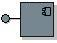

| 工件：设计子系统 |
|  |
|
用途
关系
| 容器工件 | ||
|---|---|---|
| 角色 | 负责人: | 修改者: |
| 任务 | 输入至:
| 输出自: |
| 流程使用情况 | ||
描述
| 主要描述 | 设计子系统是封装行为、显露一组接口并封装其他模型元素的那部分系统。从外部来看，子系统是一个单一设计模型元素，与其他模型元素协作以完成其职责。可以从外部看到的接口及其行为称为子系统规范。从内部来看，子系统是模型元素（设计类和其他子系统）的集合，这些元素实施子系统规范的接口和行为。这称为子系统实现。 设计子系统的“封装”能力与工作产品：设计包的“封装”能力相对照，后者不实现接口。 包主要用于配置管理和模型组织，而子系统提供附加行为语义。 |
|---|
定制
| 说明选项 | UML 表示方法：将设计子系统建模为 UML 2.0 组件。UML 还为名为 <<subsystem>> 的组件定义了构造型，例如，指示可用来表示大规模结构。关于表示方法，请参阅指南：设计子系统。
设计子系统是将大型系统分解成可以理解的部分的重要方法。在基于组件的开发中，如果要指定希望独立开发、重用或替换的组件（请参阅概念：组件），设计子系统特别有用。 与设计子系统有关的重要定制决策是：
应在 UML 1.x 表示将设计子系统建模成 UML 2.0 组件还是 UML 1.5 子系统是一项重要的定制决策（请参阅指南：设计子系统）。 关于更多信息，请参阅 UML 1.x 和 UML 2.0 之间的区别。 |
|---|

更多信息
© Copyright IBM Corp. 1987, 2006. All Rights Reserved. |